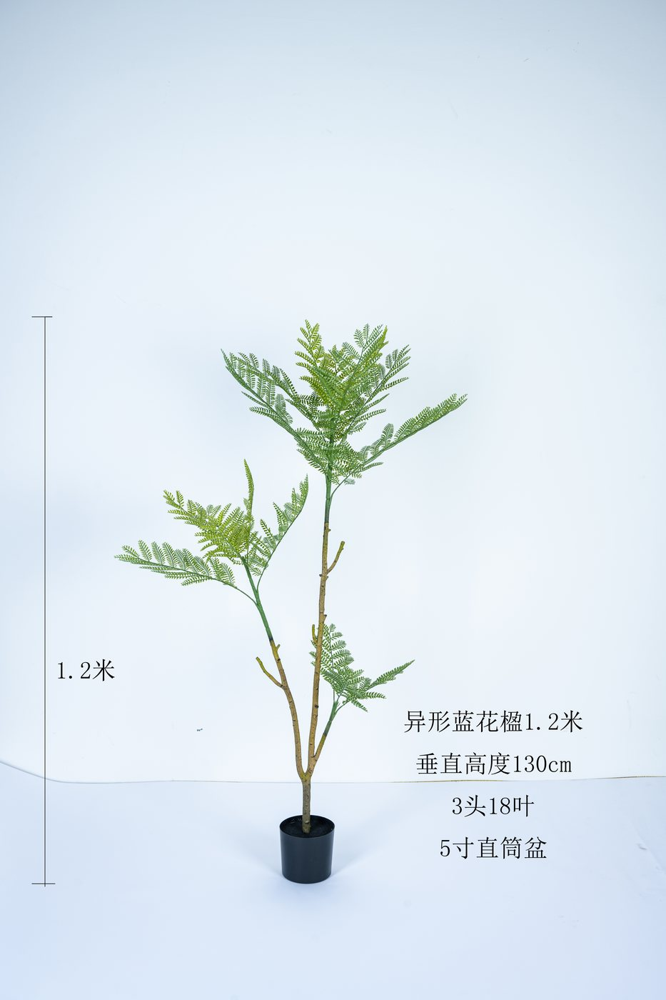
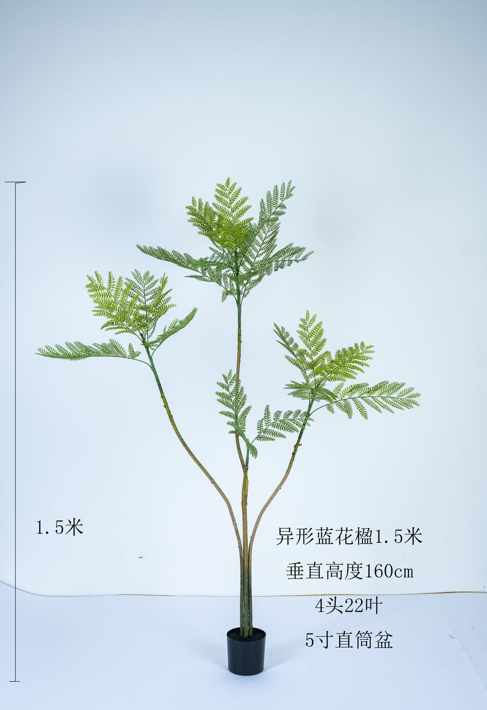

Flowering Trees
Artistic Jacaranda
Artistic Jacaranda is a seasonal flowering accent for gardens, patios, and commercial landscaping. The photographs show examples in heights from 120–220 cm. This is a factory photograph of the actual product; exact dimensions, packing, MOQ, lead time and price are confirmed by the seller on inquiry.
Opens your email application; sending happens there.
Product information
Artistic Jacaranda is a seasonal flowering accent for gardens, patios, and commercial landscaping. The photographs show examples in heights from 120–220 cm. This is a factory photograph of the actual product; exact dimensions, packing, MOQ, lead time and price are confirmed by the seller on inquiry.
Specifications
| Heights (from photos) | 120–220 cm |
|---|---|
| Product code | LC-N070 |